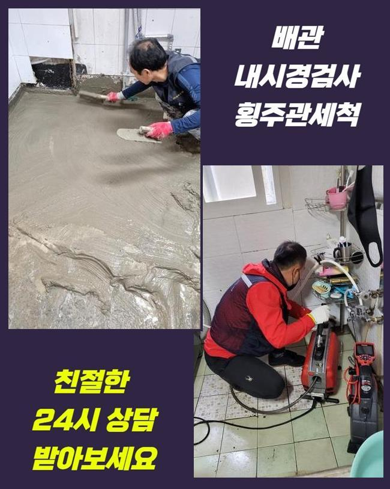
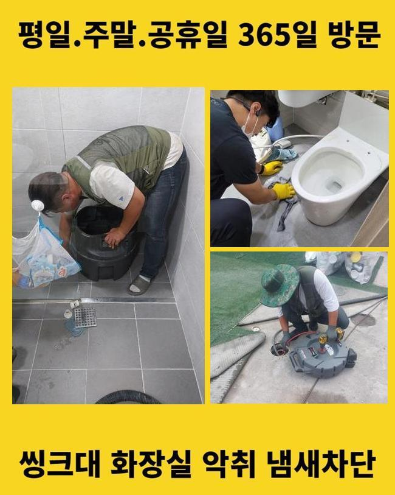
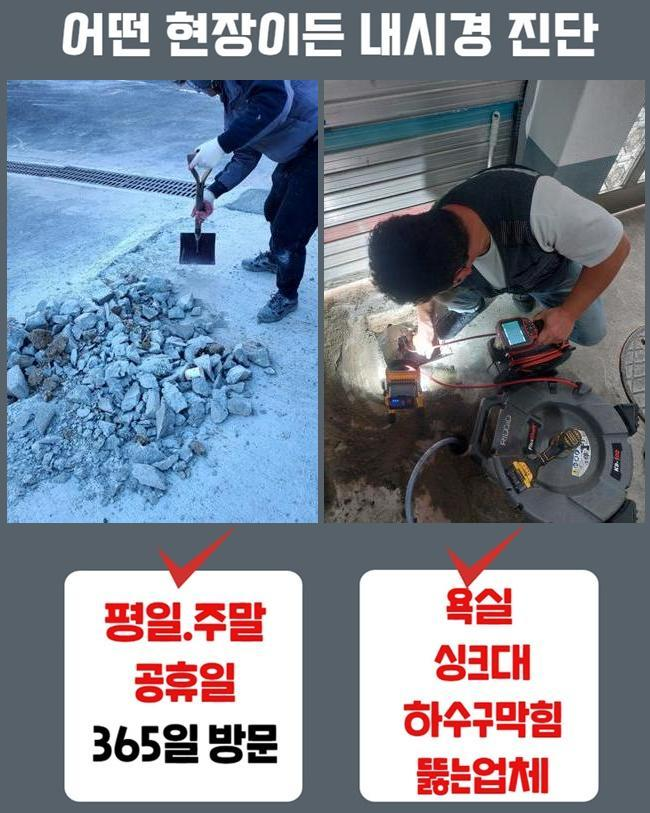
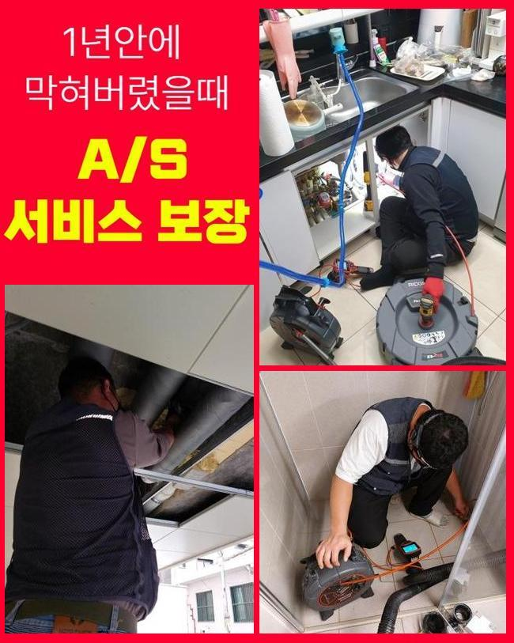
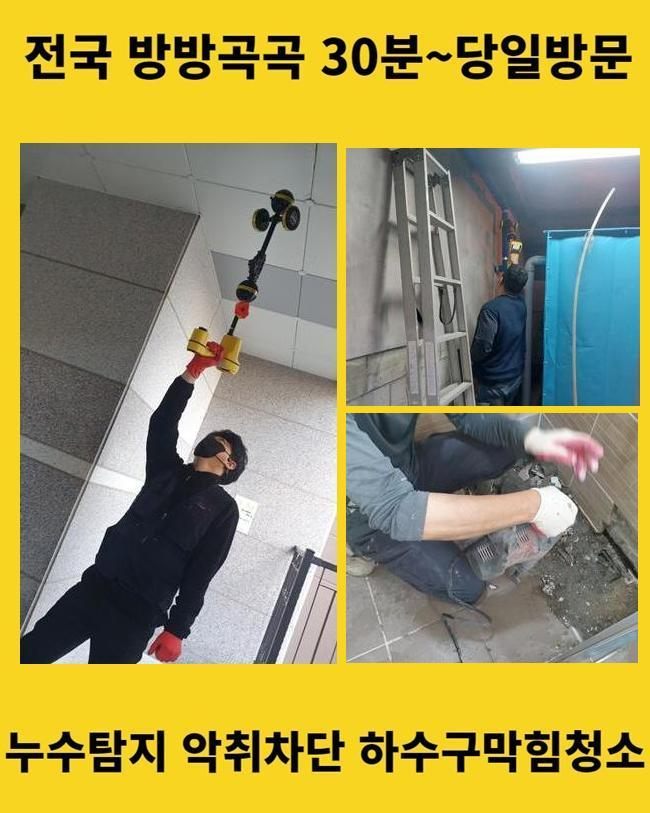
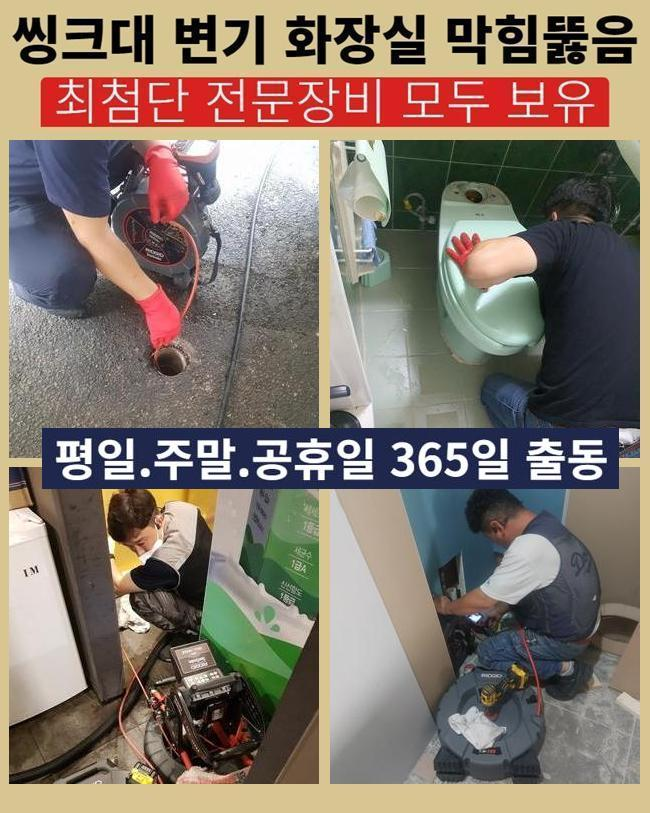
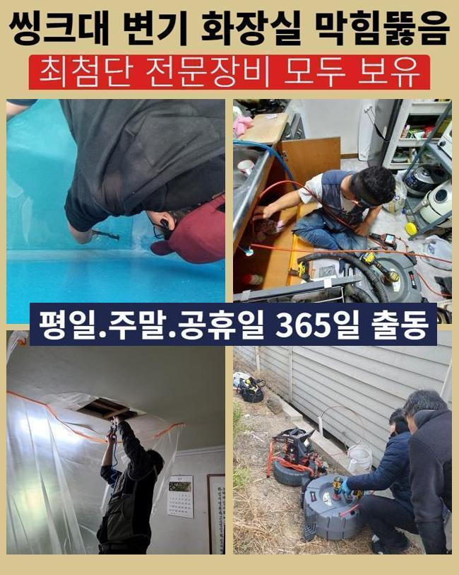

🏠 인천 가좌동화장실뚫음 신현원창동 하수관고압세척 배관막힘누수
인천 싱크대막힘 전문 시공 후기

📋 작업 개요
- 위치: 인천
- 서비스 유형: 싱크대막힘, 하수구막힘, 배관막힘, 누수수리, 역류해결, 뚫는업체, 고압세척
- 작업 일시: 2024. 11. 27. 19:44
- 업체명: 하수구수사대 (010-5615-2118)
🔍 문제 상황
인천 가좌동화장실뚫음 신현원창동 하수관고압세척 배관막힘누수
배관시스템이 무너졌을때 여러분들은 어떤시도로 처리하시나요
대부분은 셀프조치로 대처하곤하시죠
얼마전방문했던 막힘사례를 통하여 배관에관해 공개해볼게요
하수관은 사람의눈으로 파악하는것은 어렵기때문에 이물이퇴적되어 막힘현상이 발현될수있어요
이런상황이면 신속대처가 필요하고 역류까지 이어진다면 조심하셔야해요
하수구가막혔을때 일상생활에 불편함을 발생시키기에 최대한빠르게 대처해야만합니다
하수관에서 막힘징조를 발견하셨다고 한다면 배관수리공을 호출해서 조치해야하죠
한번더 강조드리는것으로 생활시설중 배수관이 막히게된다면 생활에지장을 일으키기때문에 사전에 방지해주는것이 중요한부분인데요
오랜기간쌓인 이물질은 제거해내기가 어려우며 부주의하게 조치한다면 누수현상까지 연결될수있어요
그렇기때문에 전문가에게 빠르게도움을 요청해야해요

🔎 원인 분석
💡 전문가 진단: 정밀 진단 장비를 사용하여 슬러지의 고착 여부를 판명하고 타격/세척 작업을 실시했습니다.
저희한테 문의주신 고객분들의 불편한점을 헤아리고있어 뚫어드리기위해 뚫는장비를 갖춘후 방문드렸어요
욕실배수구쪽 문제발생원인은 상가내부의 노후화때문인걸로 파악할수있었죠
화장실이막혔을때 어떤방식으로 뚫어내는지 알아보도록해요
욕실하수구가 막혔을때 관리실쪽에 신고해보았지만 진전되지않아 연락주셨다고 하셨죠
긴급방문으로 현장상태를 확인해봤을때 물을사용할때 흐르지못해 솟구치는 현상이있었으며 아래층건물에 물이떨어지는 현상까지 나타나고있었죠
이런이유는 하수구내부에 물이가득차 흐르지못하고 막힌거라서 그런건데요
빠른조치를 통해서 처리해야될것을 살필수있었죠
이러한경우라면 전문가의도움이 필수랍니다
석션기를사용해 잔여되어있는 물들을 제거해준후 오염물을 제거해주었죠
그치만 오염물이 즐비한 벽면쪽에는 내시경카메라를 활용해서 소거과정을 착수했습니다
이물이 조금이라도 잔여된다면 쌓이고쌓여 같은문제로 막힐수도있다보니 말끔히 소거해줬어요

🔧 작업 과정
주기적인세척과 점검이중요하며 막힘발현시 조속하고 효과적으로 대처해줘야해요
다음현장으로 이동해서 상세히 들여다봤더니 세면대쪽과 화장실배관에 이물이쌓인걸 체크했는데요
이번장소는 굳어진오염물이 확인되었어요
고착물을 발견한경우 샤프트기계를 활용해서 분쇄해야해요
현재상황에 대하여 확실히살핀뒤 알맞은장비를 사용해줘야해요
플렉스샤프트끝에 노즐이회전하며 단단한이물을 잘게부수는 수리과정을 거칩니다
석회물제거후 남은이물의경우 흡입기를통하여 빨아들입니다
갑작스레 하수구주위에서 물이느린속도로 내려가지거나 역류하고있다면 막힘신호를 나타내는겁니다
이런현상이 지속될경우 조속히 처리하는것이 좋아요
막히게되었을땐 미루지마시고 해결해야하죠
막힘방치시 하수관이손상되며 물이새는 문제가 발생할수있기에 조심해야하죠
이러한일을 대비하기위해선 정기로 하수구점검을 실시하는것이 좋으며 문제발견즉시 곧바로 조치해줘야해요
이렇게해준다면 막심한피해로 연결되는것을 방지할수있답니다
씽크대하수구는 배관촬영기로 배관안속을 살폈고 오염물질이 가로막고있는걸 파악할수있었네요
고착물을 분해하는대신 약품을통해 연화과정을 진행하기로 결정해주었죠
강력한힘을 가하여 하수구를 손상입히는걸 방지하려고 약품으로 접근한거에요
약품처리를 해준뒤 석션기를활용해 막힘을해결했으며 정상적인상태로 복구시켰습니다


✅ 작업 완료
현장상태에 알맞게 대응하여 해당증세를 효과있게 타파시킬수있었죠
마친후에는 예방사항에 대해서 설명드렸어요
거름망이나 하수구트랩을 설치해주면 악취증세나 막힘문제들을 방지할수있다고 말씀드리고나서 현장을나설수 있었는데요
저희들은 어떤장소든 1시간안으로 도착해드리며 분명하게 수립계획을 진행하고있으니 믿고맡겨보세요!
이것말고도 궁금하신게 있으시면 언제라도 연락주신후 여쭈시면 친절히 상담도울게요




⚠️ 베란다 누수 및 방수 관리 방법
- ✅ 비가 많이 올 때 창틀 주변이나 아래층 천장에 얼룩이 생기는지 정기적으로 확인해 보세요.
- ✅ 우수관 주변 실리콘 마감이 들뜨거나 깨진 틈새가 있는지 손상 여부를 수시로 체크하세요.
- ✅ 베란다 바닥 타일의 줄눈(메지)이 소실되면 그 틈으로 물이 침투하여 누수가 유발됩니다.
- ✅ 누수 의심 증상 발견 시 방치하면 아래층 손실이 커지므로 즉시 전문가의 진단을 받으십시오.
💡 핵심 정리
- 확실한 장비 작업(내시경 점검 및 샤프트 스케일링)으로 원인을 뿌리 뽑습니다.
- 작업 후 1년 이내에 동일한 부위 재발 시 100% 무상 A/S 서비스를 보장합니다.
- 서울 · 경기 · 인천 전 지역에 24시간 언제든 긴급 출동할 수 있도록 항시 대기 중입니다.
❓ 자주 묻는 질문 (FAQ)
🚨 인천 싱크대막힘 문제로 고민이신가요?
정확한 원인 진단과 확실한 시공으로 재발 없는 해결을 약속드립니다.
24시간 긴급 출동 | 서울 · 경기 · 인천 전지역 | 1년 내 재발 시 무상 A/S